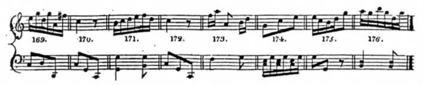

Mozart Dice Game
Musikalisches Würfelspiel, K.516f
"To compose, without the least knowledge of music, so many German waltzes or ländler as one pleases, by throwing a certain number with two dice." -Mozart
"To compose, without the least knowledge of music, so many German waltzes or ländler as one pleases, by throwing a certain number with two dice." -Mozart
In 1787, composer Wolfgang Amadeus Mozart published a musical composition entitled "Musikalisches Würfelspiel", or "Musical Dice Game". This composition allows one, as Mozart puts it, "to compose, without the least knowledge of music, so many German waltzes or ländler as one pleases, by throwing a certain number with two dice."
The composition consists of 176 pre-composed measures of music (example below) and two numerical tables (example right) which show the user which numbered measures to select based on the roll of two dice.
To play, the user rolls a pair of dice sixteen times, once for each measure of the waltz or minuet to be generated. The user then uses the numerical tables to look up the next numbered measure to be used.
Visit IMSLP to see a copy of the published dice game. This website uses VexFlow, MIDI.js, jsmidgen, and jQuery. See the source code for this site on GitHub or send me an email and let me know what you think.